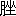

儒家の政治に關する理想は、君主其仁義の徳を修め、推して之を四海に擴むるにある。所謂人に忍びざるの心を以て、人に忍びざるの政を行ひ、教養並待ちて、天下の民、匹夫匹婦まで其澤を被らざるものなきに至るを以て王道の極功として居る。覇者の政は即ち之に異り、或場合には、仁義道徳を云々するけれども、是れ其美名を假るに過ぎない。又其政治は時としては人民に幸福を與へ、顯著なる事功を生ずることもあれど、其實彼等には其自身の目的があつて、人民を以て其目的を遂行するに必要なる機械と見、專ら法に任じ、人民を驅りて之に赴かしめ、以て役使の用に供する。即ち儒家が政治を以て人民の爲めの政治となすに反し、法家にありては人民を以て政治を遂行する一の機械とする。是の如く兩者の主義主張同じからざりしを以て、孟子の如きは儒家の立場より、春秋の世、覇者として有名なりし齊桓晉文、若しくは齊桓の覇業を輔けて功ありし管仲、同じく齊の政治家にして法家の思想を抱きし晏子等に對しては不滿の意を表はして居る。其齊宣王の問に答へて「仲尼之徒。無下道二桓文之事一者上。是以後世無レ傳焉。」といひ（梁惠王上）公孫丑が「夫子當二路於齊一。管仲晏子之功。可二復許一乎。」といひしとき、「子誠齊人也。知二管仲晏子一而已矣。」と答へて、己を管晏の徒に比するの不平を列らべ（公孫丑上）又た「湯之於二伊尹一。桓公之於二管仲一。則不二敢召一。管仲且猶不レ可レ召。而況不レ爲二管仲一者乎一。」（公孫丑下）といひし孟子の言葉により何如に其管仲を眼下に見しかを知ることができる。其他荀子が「仲尼之門人。五尺之豎子。言羞レ稱二乎五伯一。」（仲尼篇）といひし言に徴すれば、當時孟子に限らず、凡そ儒家に屬せしものは、五伯若しくは之を輔けし人物を非難し、又彼等の政治に學術的理窟をつけたる法家學派と互ひに相爭ひ、王覇の別を嚴にして孔子の道を明にせんと務めた有樣が察せられる。
然らば儒家の祖とする孔子自身は此等の覇者と之を輔けて其業を成さしめたる人物、例へば管仲の如きものにつき何如に之を批評せしか、孟荀と同じき峻嚴なる態度を取りて之に向はれしか。是れ此文に於いて論ぜんと欲する所である。
さて孔子の管仲に對する批評は論語に散見するが、申迄もなく第一は八
 篇の『管仲之器小哉』の一章、それから憲問篇『或問子産』章に管仲の評語あり、又外に猶二章あり。今説明の爲めに、其全文を擧げん。
篇の『管仲之器小哉』の一章、それから憲問篇『或問子産』章に管仲の評語あり、又外に猶二章あり。今説明の爲めに、其全文を擧げん。
子路曰。桓公殺二公子糾一。召忽子レ之。管仲不レ死。曰。未レ仁乎。子曰。桓公九二合諸侯一。不レ以二兵車一。管仲之力也。如二其仁一。如二其仁一。
子貢曰。管仲非二仁者一與。桓公殺二公子糾一。不レ能レ死。又相レ之。子曰。管仲相二桓公一覇二諸侯一。一二匡天下一。民到二于今一受二其賜一。微 二管仲一。吾其被レ髮左レ衽矣。豈若下匹夫匹婦之爲レ諒 也。自經二於溝涜一而莫中之知ラルヲ上也。
子貢曰。管仲非二仁者一與。桓公殺二公子糾一。不レ能レ死。又相レ之。子曰。管仲相二桓公一覇二諸侯一。一二匡天下一。民到二于今一受二其賜一。
以上は子路子貢共に管仲が其君の爲めに死すること能はず、却つて讎に事へたる不義の行を指斥し、かくては仁者といはれまじと思ひ、孔子に問ひしが、孔子は管仲功業の顯著なりしことを稱し、孔子が容易に人に許るされざりし仁を管仲に許るし、しかも
篇では管仲を評して『器小哉』といひ、終りには『然則管仲知レ禮乎』との問に對し『管氏而知レ禮。孰不レ知レ禮。』といつて其非禮を責めながら、何故に一方に於てあれ程までに管仲を美め、其弟子中顏淵に對してすら僅に「三月不違仁」を許したる大徳を管仲に許し、しかも其仁に如かむやと二度までも繰返へして之を歎美せられしか。是に就いて從來の學者は二つの見方をして居る。即其一は孔子の道は非常に大にして一の學派學説として見るべきものにあらず、孔子の仁も必竟長人安民の徳に過ぎないから、管仲の功業を美められても少しも差支ない。管仲の器を小なりといはれしは備はらんことを賢者に求めてかく言はれしもので、其實斯の如き功業を立て國家人民を利したるものを仁者と云はれぬ筈はない。後世孟子の如きは自ら儒家と云ふ狹き立場に我身を置き、己れの宗旨を尊くするの念に驅られて管晏等の覇者の輔たりしものを罵れども、それは孟子以後のことで、孔子にはかゝる考はなかつたといつて居るが、此等の學者の見方によると孔子の管仲に對する批評が別に矛盾せぬといふのである。
又是れに反して或學者は「管仲之器小哉」の章に於ける孔子の評論と前に擧げた孔子が管仲を美めて仁を許るされた章とは一致しないものとする。然らば何故論語中にかくの如く一致を缺ぐものがあるかといふに、一體論語には古論魯論齊論など種々の本文があつたが、恐らく此章は孟子が惡口をいつた通り管仲晏子のみを天下の大人物と心得たりし齊人が勝手に其論語即ち齊論に入れしもので、他の古論や魯論になかつたかも知れぬといつて居る。
前に擧げた一説は徂徠等のいふ所がつまりさうであるし、又後の一説は清の孫志祖の讀書録などに「後世學者。遂疑下聖人立論之偏。與二器小章一抑揚懸絶上。而欲レ置二此二章於齊論之内一。」とあるが如き即ち是れである。この兩説は均しく尤と思はるれども、詳に之を察すれば疑ふべきものがないではない。第一孔子が管仲の功業を美められしは論者のいふ通りなれど、何故に人間の到達し得べき最上至極の徳にして、孔子自らも敢て之に居らず又何人にも容易に許されぬ仁を以て管仲に許されしか。顏淵が仁を問ひしとき、孔子は『非禮勿レ視。非禮勿レ聽。非禮勿レ言。非禮勿レ動。』を以て之に答へられた。若し管仲が『管子而知レ禮。孰不レ知レ禮。』といはれし如き非禮の人であつたら、之に對し其仁を許されたことは譯が解らぬ、又た孔子仁を許すの章を以て齊人の加筆に成り、齊論にのみあつたものとするは、面白き見方の樣にも聞ゆれど、是れは全く想像説にして何等の證據なし。如何となれば論語に古論齊論魯論の別ありしことは魏何晏集解の序に詳にして、序には明に三者編次の同じからざるを述べ、齊論凡そ二十二篇にして其内魯論よりも問王知道の二篇多き由をいつてゐる。即ち問王知道の二篇以外に齊論と其他の論語との異同あるよしを云はざれば、間接に憲問の或章を以て齊論にのみありしとなすの説は根據なきことゝなるであらう。又今一つの點は此章に孔安國の注を引いてあるが、孔安國は何晏の序によれば古論語に訓説を書いた人となつて居る。若し孔安國の注が果してあつたものとせば其注が齊論のみにある章に入つて居る譯はないのである。要するに齊人加筆の説も成立たない。
然らばこの孔子の管仲評に關する前後不一致を如何に見るべきかといふに、第一には前に擧げたる憲問篇孔子管仲の仁を許るされし文句中、『如其仁』の意味で、この三字の解釋如何によりて孔子の管仲評が前後一致せぬことにも、又一致することにもなるのである。
この解釈に就いて何晏集解には孔安國の注を擧げ
孔曰誰如二管仲之仁一矣。
とあり。結局管仲程の仁者は他に比類なかるべしとの意味にて、鄭玄もまた、
重言レ如二其仁一者。九二合諸侯一。功濟二天下一。此仁爲レ大。死レ節仁小者也。
といひ（太平御覽卷四百十九に見ゆ、孔廣林の輯本論語鄭氏注に鄭注として之を收めたり。）朱子は流石に其王覇の分、義利の別を嚴にする學説よりして、孔子が仁を許せしことに囘護の辭をなし、
葢管仲雖レ未レ得レ爲二仁人一。而其利澤及レ人。則有二仁之功一矣。
といつてゐる。頗る窮した語であるが。結局安國が
然るにかくては前に述べたる如く孔子の言葉に矛盾を生ずるを以て、清の宋翔鳳は『如二其仁一』の一句を『其仁の如し』と讀み、孟子が『以レ力假レ仁者覇』といひしが如く、覇者は眞に仁心を以て仁を行ふにあらず、唯其美名を假るに過ぎず、管中の功業も其動機は必ずしも善ならざれども、其事（結果）は仁の事に相違なければ、其仁の如しといへりとなし（論語説義、我國冢田虎も全く同一の説をなせり。其著冢注論語に見ゆ。）、又た孫志祖は『如二其仁一。如二其仁一。』を以て葢疑而不レ許之詞。非二重言以深許一レ之也。といつてゐる（讀書録）。葢疑而不レ許之詞といへば如キハ二其仁ノ一如キハ二其仁ノ一と讀み、歇後の辭となすものに似たり（

 の四書考異には「如其仁」の其を召忽の代名詞となし、召忽身を殺して仁を成す管仲の功亦之に匹敵す共に仁となすべしとの意に解せり。如をゴトシと讀むことは同一なれども其義は自ら別なり。）。人或は王引之の經傳釋詞に『如猶乃也』となるに據り『如其仁』を『乃チ其仁』の意に解し、孰如二其仁一といふ如き極力賞讚の辭となさず以て孔子の語勢を緩和せんとするものもある（潘維城論語古注集箋、黄式三論語後案等）。
の四書考異には「如其仁」の其を召忽の代名詞となし、召忽身を殺して仁を成す管仲の功亦之に匹敵す共に仁となすべしとの意に解せり。如をゴトシと讀むことは同一なれども其義は自ら別なり。）。人或は王引之の經傳釋詞に『如猶乃也』となるに據り『如其仁』を『乃チ其仁』の意に解し、孰如二其仁一といふ如き極力賞讚の辭となさず以て孔子の語勢を緩和せんとするものもある（潘維城論語古注集箋、黄式三論語後案等）。此等の説も一應尤なりと雖、如其仁を以て『其仁の如し』若しくは『其仁の如きは』と讀むは文理に於て未だ協はざるに似たり。又『如』を以て乃となすも、如乃の二字相通ぜしことは古書に例あれば穴勝不可となさず。併是れ唯孔子仁を許す語勢の強きものを緩和したるまでにて前に擧げたる矛盾を去ることは出來ないのである。
余思ふに何晏集解に漢以來諸家の説を收めたるが、其前漢にあつては則ち一の孔安國あるのみ。而して孔安國已に『誰如二管仲之仁一矣』の注をなせしとすれば孔子仁を許るすの説は前漢傳來のもので相當に其權威を認めねばならぬが、集解所收の孔安國注の信ずるに足らず、其後人の贋鼎たることは、劉端臨、陳
 、臧庸の諸人之を前に疑ひ、沈濤論語孔注辨僞を著はし、丁晏孔注證僞を著はすに至り、其僞彌
、臧庸の諸人之を前に疑ひ、沈濤論語孔注辨僞を著はし、丁晏孔注證僞を著はすに至り、其僞彌 明となつた（丁晏の書は予未だ之を見ず、今劉寳楠論語正義に據る。）。それで、縱令孔注にさうなつて居るからといつて、其れが前漢經師の説であるとするに足らぬ。余はそれよりも楊雄の法言の方がもつと論語を解する材料となると思ふ。
明となつた（丁晏の書は予未だ之を見ず、今劉寳楠論語正義に據る。）。それで、縱令孔注にさうなつて居るからといつて、其れが前漢經師の説であるとするに足らぬ。余はそれよりも楊雄の法言の方がもつと論語を解する材料となると思ふ。申す迄もなく楊雄は易に擬して太玄を作り、論語に擬して法言を作つたといはるゝだけ（漢書楊雄傳）法言を見ると其或章は論語と全く同一の句法を用ひて居るが、前に擧げた「如其仁」と同一の句法を用ひ、然かも論語に於けるが如く之を疊言した例がある。
或謂。子之治レ産。不レ如二丹圭之富一。曰。吾聞先生相與言。則以二仁與一レ義。市井相與言。則以二財與一レ利。如其富。如其富。（學行篇）
或問屈原智乎。曰。如レ玉如レ瑩。爰變二丹青一。如其智。如其智。（吾子篇）
或曰。淵騫曷不レ寢。曰。攀二龍鱗一。附二鳳翼一。巽以揚レ之。勃勃乎其不レ可レ及也。如其寢。如其寢。（淵騫篇）
或曰。申韓之法非レ法與。曰。法者謂二唐虞成周之法一也。如申韓。如申韓。（問道篇）
或問屈原智乎。曰。如レ玉如レ瑩。爰變二丹青一。如其智。如其智。（吾子篇）
或曰。淵騫曷不レ寢。曰。攀二龍鱗一。附二鳳翼一。巽以揚レ之。勃勃乎其不レ可レ及也。如其寢。如其寢。（淵騫篇）
或曰。申韓之法非レ法與。曰。法者謂二唐虞成周之法一也。如申韓。如申韓。（問道篇）
以上の例に於いて、如其富、如其智、如其寢、如申韓、を各疊用して居るのは疑もなく論語の『如其仁』を重言したのを學んだものである。然るに若し論語の如其仁が孔安國の解釋の通りとし、是れを法言に應用し、
近時兪
 は楊雄法言の文から論語の如其仁の義を推定すべきをいひ、
は楊雄法言の文から論語の如其仁の義を推定すべきをいひ、
以二楊子之意一推レ之。則如二其仁一者不レ許レ之也。孔子於二管仲一。但許二其事功之盛一。而未二嘗予レ之以一レ仁。故其意若レ曰下論二管仲一者。但以二事功一論レ之足矣。如何其以レ仁也。如何其以上レ仁也。（諸子平議）
と論じて居るが、是れは面白き見方と思ふ。兪
は「如」の上に「何」字を加へて何如の意味に解し、又た王引之は經傳釋詞に如猶レ奈也といひ如と奈とを同一に使つたことを注意して居るが、此を「如其仁」の場合に應用しても、つまり同一の結果となるのである。要するに前に述べたる通り、法言の例より推せば、『如其仁』『如其仁』と二度までも繰返へしたのは、其仁を許さゞるの意を示したとすれば、前に擧げた孔子の管仲に對する評語が前後一致せぬといふ非難はなくなる譯である。而してかく解しても憲問篇の二章其文理に於て聊かも不都合はない。即ち前に於て管仲の功業を稱し、最後にそれでも仁者とはいはれぬと轉語を下したものと見る。『子貢曰。管仲非二仁者一與』章と子貢が仁者たらざる理由として管仲が公子糾の爲めに死すること能はず、却つて其讎に事へた事實を擧げたから、此に對し孔子が管仲を辯護したまでゞ、孔子が仁を許さゞる譯は、管仲の理想が低く、僅かに覇者の佐たるに過ぎざりしに由る所以を言外に含ませたものと見れば何の差支もない。論語の中には孔子が人物を評論して、初めに其美點を擧げ、最後にそれでも仁者とまでは言はれぬと之を抑ゆる樣な言辭をなした例は、
子曰。由也千乘之國可レ使レ治二其賦一也。不レ知二其仁一也。
又は令尹子文、陳文子などを評して其忠若しくは其清を美しながら、然らば「仁
（大正十一年十一月、支那學第三卷第二號）